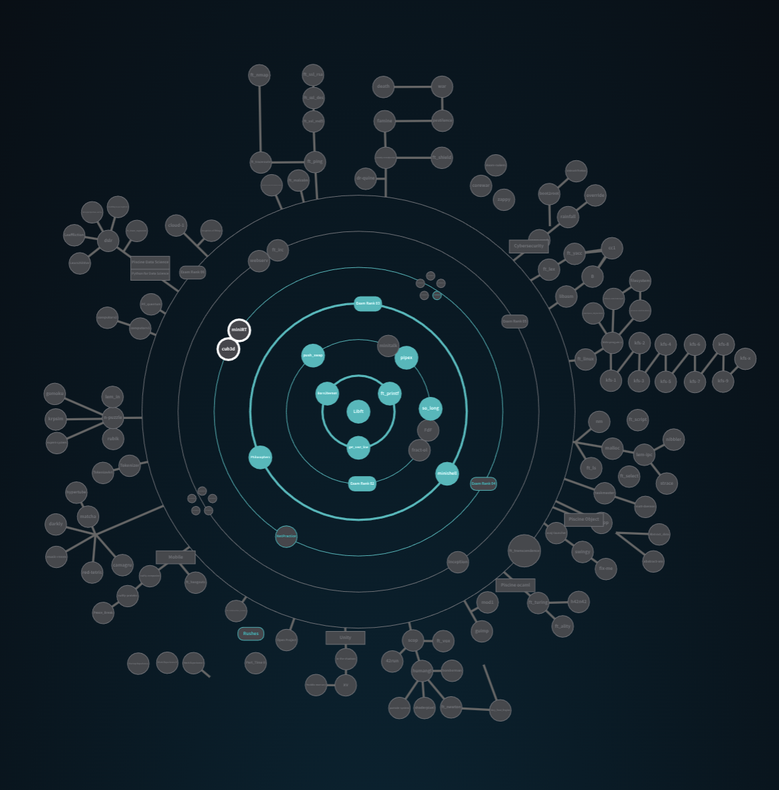

42 Cursus | Common Core Complete
Campus: 42Tokyo
GitHub: Hen00af
What is 42?
The 42 school is more than a programming campus.
At 42, you learn how to learn. No teachers, only self-learning and peer-to-peer collaboration.
Its gamified methodology allows students to progress through levels and acquire the technical and transversal skills companies demand.
👉 Learn More Here
Piscine
👉 Learn More about the 42 C Piscine
The Piscine is a 4-week intensive bootcamp in C programming, shell scripting, and teamwork.
It's the entry selection for 42, with a very low acceptance rate, making it highly competitive.
Common Core Projects
RANK 00
- ☑ Libft — Create your own C library with basic libc functions.
RANK 01
- ☑ ft_printf — Recreate printf with support for multiple data types.
- ☑ get_next_line — Function that reads a line from a file descriptor.
- ☑ Born2beroot — Setup a Debian server with virtualization.
RANK 02
- ☑ Pipex — Introduction to UNIX piping and redirections.
- ☑ so_long — A simple 2D game using MiniLibX.
- ☑ Push_swap — Sorting algorithm with two stacks in minimal operations.
- ☑ Exam Rank 02
RANK 03
- ☑ Philosophers — Dining philosophers, threads, and mutexes.
- ☑ Minishell — A small shell implementation with pipes, redirections, and builtins.
- ☑ Exam Rank 03
RANK 04
-
☑
C++ Modules Part I
- ☑ Module 00 → Basics (namespaces, classes, etc.)
- ☑ Module 01 → Memory allocation, references, switch
- ☑ Module 02 → Operator overloading, Orthodox Canonical Form
- ☑ Module 03 → Inheritance
- ☑ Module 04 → Abstract classes and polymorphism
- ☑ NetPractice — Networking & subnetting exercises.
- ☑ Cub3D — Basic ray-casting to create a 3D game.
- ☑ Exam Rank 04
RANK 05
-
⬜
C++ Modules Part II
- ⬜ Module 05 → Exceptions
- ⬜ Module 06 → Casts
- ⬜ Module 07 → Templates
- ⬜ Module 08 → Containers, iterators, algorithms
- ⬜ Module 09 → STL
- ⬜ Inception — Docker & VM system administration.
- ⬜ Webserv — HTTP server in C++ from scratch.
- ⬜ Exam Rank 05
RANK 06
- ⬜ ft_transcendence — Full-stack web app (NestJS, PostgreSQL, Docker, etc.).
- ⬜ Exam Rank 06
My Holy Graph
